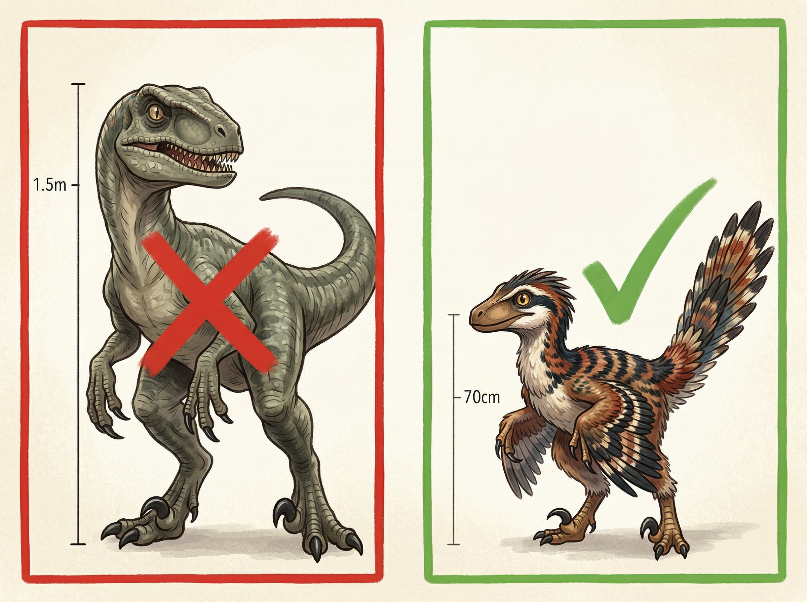

🦴 ×
0
‹
›
🏠 第六章
回家
鸟类起源 · 大灭绝 · 无线电通信
终于！Ian看到了
无线电塔
！
但它被
藤蔓
缠满了，
设备锈迹斑斑。

塔上筑满了
鸟巢
——
住着一群小型
长羽毛的恐龙
。
它们有翅膀、有喙、会飞……
🧒 "等等……它们看起来就像……
鸟
？！"
🐦 科学时间：鸟就是恐龙！
没错！
鸟类就是恐龙的后代
！
1.5亿年前的
始祖鸟
（Archaeopteryx）
既有恐龙的牙齿和爪子，
又有鸟类的翅膀和羽毛——
它就是
过渡物种
！
经过漫长的进化：
🦕 牙齿 → 变成了
喙
🦴 厚重的骨头 → 变成了
中空的轻骨
🪶 简单的羽毛 → 变成了能飞的
飞羽
所以科学家说：
"
恐龙没有完全灭绝——
每一只鸟都是一只活着的恐龙！
"
☄️ 大灭绝
6600万年前
，一颗10公里宽的小行星
撞击了地球（现在的墨西哥湾）。
撞击掀起的灰尘遮住了太阳好几年——
没有阳光 → 植物死亡 → 食草动物饿死 →
75%的物种灭绝
！
科学家怎么知道的？
在全世界的岩层中，6600万年前那一层
都有一种叫
铱
（iridium）的稀有金属——
地球上很少，但
小行星上很多
！
但小型的恐龙——
鸟类的祖先
——
因为体型小、食性杂，
活了下来
！
Ian需要爬上无线电塔修好设备——
但那些"鸟恐龙"不让他靠近！
🧒 "它们是杂食动物……
对了！
背包里还有饼干
！"
Ian把饼干捏碎，撒到远处的地上——
小恐龙们叽叽喳喳地飞过去抢食！
Ian趁机
爬上了无线电塔
！
📡 科学时间：无线电波
世界上有很多看不见的
"波"
：
🔊
声波
：空气振动，让你听到声音
💡
光波
：让你看到东西
📡
无线电波
：能传很远，穿过墙壁和云层！
手机、WiFi、电视、GPS——
都是用
无线电波
来传递信息的！
Ian修好无线电，
就能把
求救信号
发送到远方！
Ian用力转动生锈的旋钮——
"嗞——"
无线电活了！
🧒 "SOS！SOS！这里是恐龙岛！
我们需要救援！
请回答
！"
🐦 下面哪句话是对的？
A. 恐龙在6600万年前全部灭绝了
B. 鸟类就是恐龙的后代，恐龙没有完全灭绝
C. 鸟和恐龙完全没有关系
直升机来了！
救援人员找到了爷爷，
一起安全离开了恐龙岛。
直升机升起的时候，
Ian回头望向小岛——
树林之上，一条
长长的脖子
伸向天空。是
腕龙
。
🧒 "再见了，大家伙们……"
回到家后的一个早晨，
Ian坐在窗边，看着外面的
麻雀
跳来跳去。
它们叽叽喳喳地叫着，
抖动着小小的
羽毛
……
Ian笑了——
恐龙从来没有离开过。
它们一直都在我们身边。
🐦
🔗 恐龙的特征怎样变成了鸟的特征？
🦷 恐龙的牙齿
🦴 厚重的骨头
🪶 简单的羽毛
能飞的飞羽 ✈️
鸟喙 🐦
中空的轻骨 🦴
📚 整本书你学到了什么
📖 第1章：
DNA
、气压信号、闪电距离
📖 第2章：
群体狩猎
、自然选择、真实伶盗龙
📖 第3章：
水循环
、食物链金字塔、动物领地
📖 第4章：
风向与气味
、动物超级感官、霸王龙真相
📖 第5章：
地球内部
、间歇泉、双冠龙真相
📖 第6章：
鸟=恐龙后代
、大灭绝、无线电波
🎉 恭喜你完成了
恐龙岛历险记
！
🦴 你一共收集了
0
块化石骨头！
记住Ian学到的最重要的一课：
观察、思考、行动
——
这就是科学精神！
📖 回到目录
🔄 再读一遍